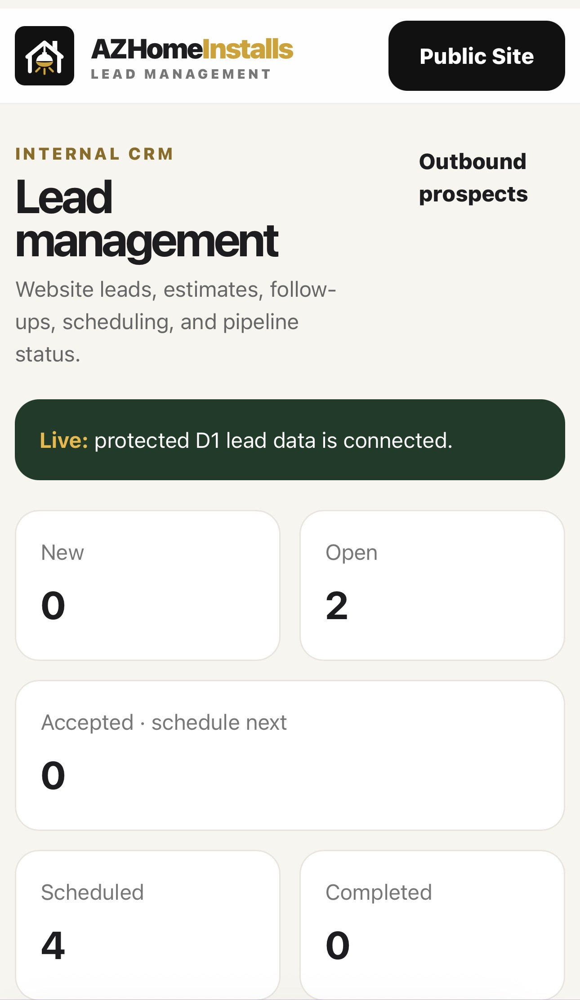
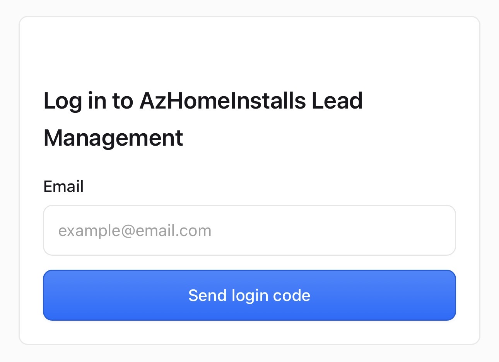

COLLECTION 001 / LESSON 04
Build a lead manager you control.
Learn the difference between a spreadsheet-style CRM demo and a genuinely protected, persistent customer system. Start with a working fictional-data exercise; then use your chosen LLM to plan the secure production version.
What AZHomeInstalls actually built
Our real operating stack includes a public estimate intake, Cloudflare Worker API, D1 database, Cloudflare Access–protected admin dashboard, lead statuses, follow-ups, and separate scheduling/outbound functions. The screenshots below document the interface; they are not downloadable source code for the production backend.


Step 1 — Define your lead workflow
Think about what happens from first inquiry to completed work. Keep the number of stages small and easy to maintain.
Enter what you know, then generate. The data stays in this browser session.
Step 2 — Copy your prompt into your LLM
The custom prompt appears in the window below. It requests a staged implementation instead of pretending AI-generated code is automatically secure.
Step 3 — Practice with a working demo
Open the local CRM exercise. It adds fictional leads, changes their statuses, counts open records, and exports a CSV. It does not store records between page loads. That limitation is intentional: it teaches the workflow before introducing authentication and database administration.
Step 4 — Plan the real secure CRM
A production CRM requires more than HTML. For the AHI-style Cloudflare route, plan: public form validation, Worker API, D1 table/migrations, Cloudflare Access for staff, authorization on every admin endpoint, protected secrets, rate limiting, backup and data export, retention rules, and end-to-end functional tests.
Use current official documentation: Cloudflare D1, Workers, and Access applications. Account privileges, free-tier limits and fees can change.
Step 5 — Pass the B.O.B. test
- Accessibility: Can a beginner add and move fictional leads independently?
- Affordability: Are hosting, storage, outbound email, domain, and backup costs identified before upgrading?
- Independence: Can the builder export the data and source, administer their own account, and restore from backups without us?